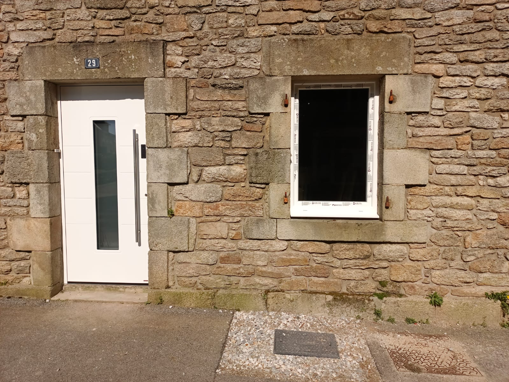
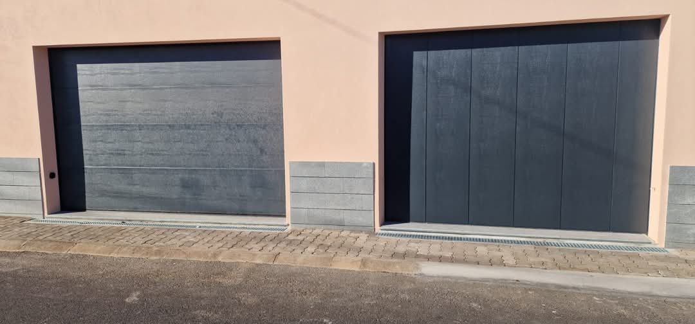
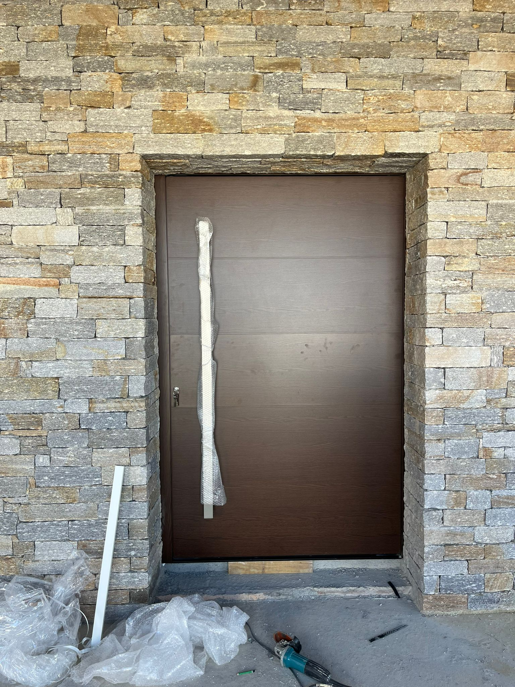

A2T Distributions intervient à Quimper, Ergué-Gabéric, Pluguffan, Plonéis et tout le Pays de Cornouaille. Produits certifiés pour les conditions climatiques du Finistère.
Le Finistère est l'un des départements les plus exposés aux intempéries de France : vent fort, pluie fréquente, humidité persistante. Une porte de garage ou une porte d'entrée bon marché ne résiste pas deux hivers dans ces conditions. C'est pourquoi nous ne proposons que des marques ayant prouvé leur durabilité en environnement côtier et atlantique.
Hörmann, Flexidoor, Pirnar et Tehni sont des marques européennes certifiées pour les zones exposées. Nos clients quimpérois et du Pays de Cornouaille le savent : le bon choix se fait une seule fois.

La porte de garage idéale à Quimper n'est pas la même qu'à Paris. Ici, il faut une double paroi épaisse, un système d'étanchéité bas de porte performant et un motorisation qui supporte les coupures de courant fréquentes en hiver. Hörmann LPU 67 et Flexidoor Pro répondent exactement à ces exigences.

À Quimper, on aime ce qui est beau et ce qui dure. Les maisons de caractère du centre historique aux constructions contemporaines de Kermoysan ou Penhars ont des besoins très différents — et nous avons les solutions pour les deux. La porte à pivot Tehni convient aux maisons modernes ; les portes Pirnar boisées s'intègrent parfaitement dans le patrimoine cornouaillais.

Nous couvrons tout le Finistère Sud. Devis gratuit, déplacement inclus, réponse sous 24h.
Demander mon devis gratuit →